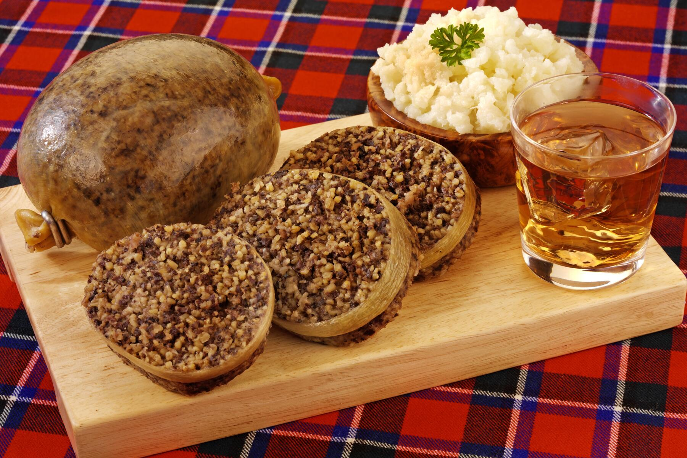
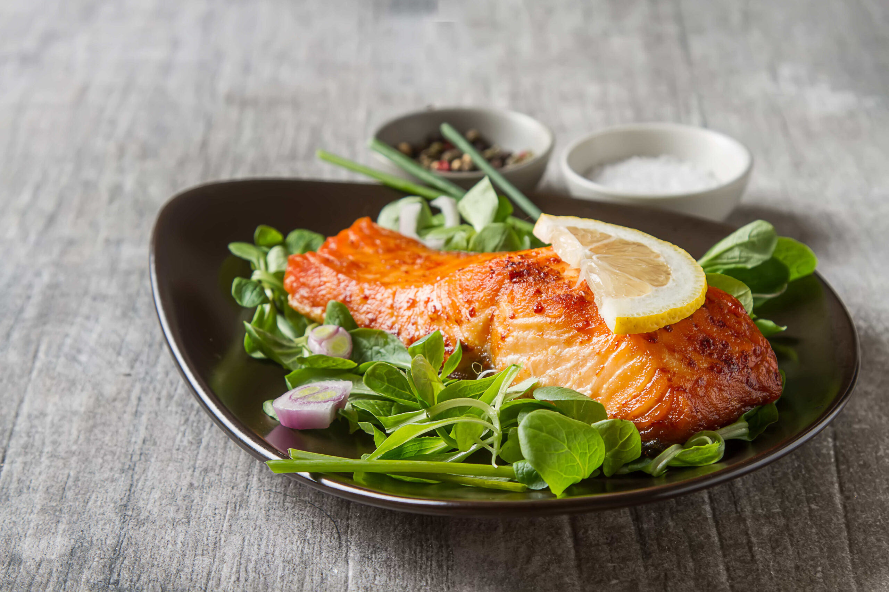
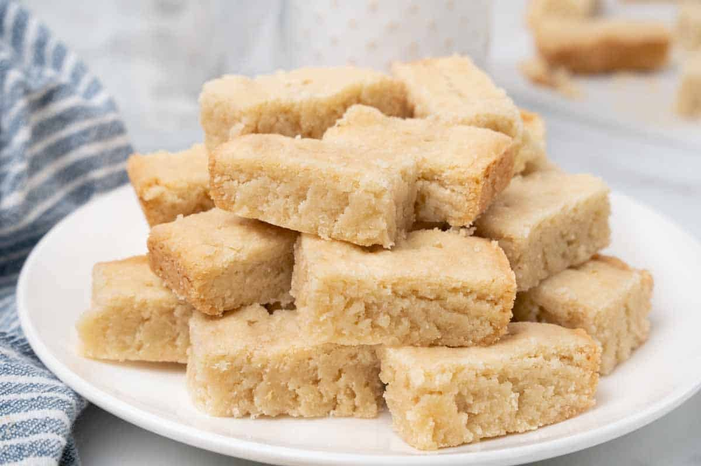
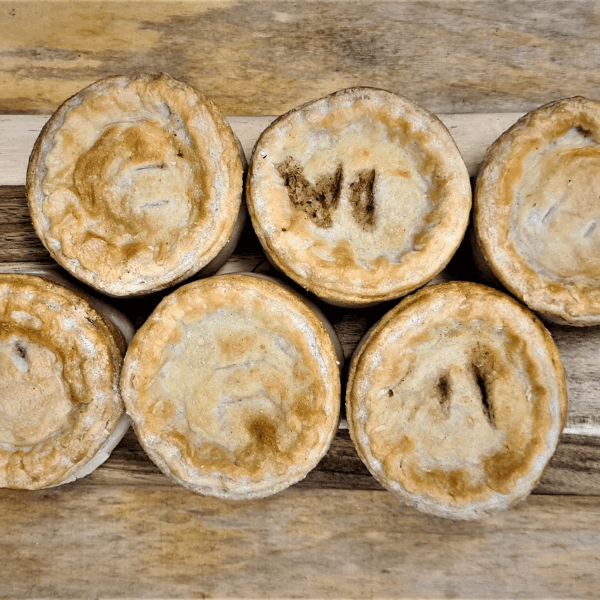
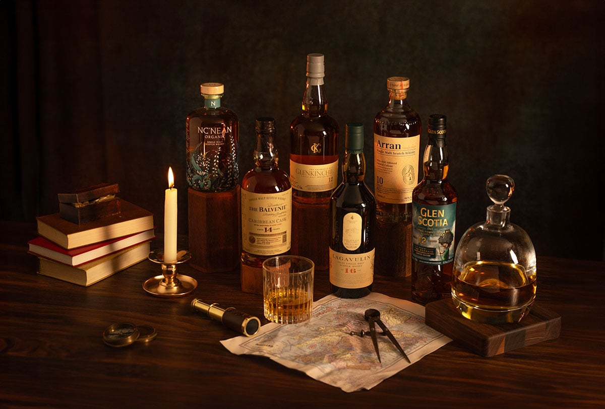

Food & Drinks
Food & Drinks
Scottish cuisine combines tradition and quality local ingredients
Haggis
- Haggis is Scotland’s national dish, traditionally made from sheep’s heart, liver, and lungs, mixed with oatmeal, onions, suet, and a blend of spices, all encased in the animal’s stomach. It’s often served with “neeps and tatties” (mashed turnips and potatoes) and a dram of whisky. Haggis is celebrated every year on Burns Night (January 25th), honoring the poet Robert Burns who famously wrote about it.

Scottish Salmon
- Scotland is renowned for its high-quality salmon, raised in the clean, cold waters of its rivers and lochs. Scottish salmon is commonly smoked, poached, or grilled, and forms a staple of both traditional and modern Scottish cuisine. It’s prized for its delicate flavor and firm, pink flesh, making it a favorite for both locals and visitors.

Shortbread
- A classic Scottish biscuit, shortbread is made from a simple mix of butter, sugar, and flour, creating a rich, crumbly texture. Its origins date back to the Middle Ages, and it was historically a festive treat during Christmas and Hogmanay (Scottish New Year). Shortbread is now enjoyed year-round and is a perfect pairing with tea or coffee.

Scott Pies
- Scotch pies are small, double-crust meat pies traditionally filled with minced mutton or beef. They are baked until golden and flaky, making them a popular snack at football matches, fairs, and bakeries across Scotland. Their sturdy design made them convenient for workers and travelers historically.

Scotch Whisky
- Scotch whisky is Scotland’s most iconic drink, made from malted barley, water, and yeast, and aged in oak barrels for several years. Each region of Scotland—Highlands, Lowlands, Islay, Speyside, and Campbeltown—produces whiskies with unique flavors, from smoky and peaty to smooth and sweet. Whisky tours and tastings are a must-do for visitors wanting to experience Scottish heritage in a glass.
